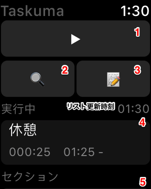
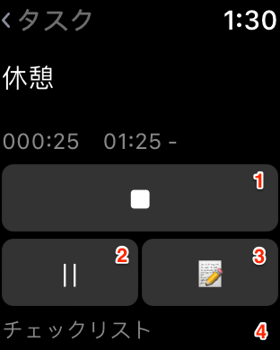
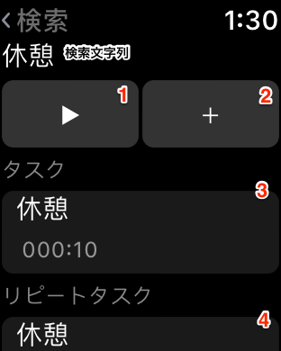
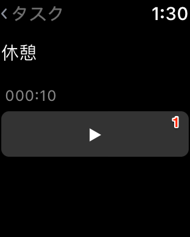
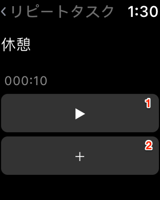

Apple Watch メイン画面

- 新規タスク開始
入力文字列をタスク名として、新規タスクを開始。リピートタスク設定無し。
※入力候補は設定画面で変更できます。
- タスク検索→検索結果
※入力候補は設定画面で変更できます。
- メモ追加（アクティブタスク）
- 実行中タスク一覧
- セクションタスク一覧
現在時刻のセクションの未実行タスク
- 再読込：画面強押し
実行中タスク詳細画面

- タスク終了
- タスク中断
- メモ追加
- チェックリスト
- チェック：行選択
※URLスキームを使用するチェック項目は選択できません。
検索結果画面

- 新規タスク開始
検索文字列をタスク名として、新規タスクを開始。リピートタスク設定無し。
- 新規タスク追加
検索文字列をタスク名として、新規タスクを追加。リピートタスク設定無し。
- タスク一覧
検索文字列を含むタスク一覧。
- リピートタスク一覧
検索文字列を含むリピートタスク一覧。
- →リピートタスク詳細：行選択
- タスク開始：スワイプ
リピートタスクを設定したタスクを作成して開始。
- 再読込：画面強押し
タスク画面

- タスク開始
リピートタスク画面

- タスク開始
リピートタスクを設定したタスクを作成して開始。
- タスク追加
リピートタスクを設定したタスクを作成。
→Help Topへ →Taskuma Topへ